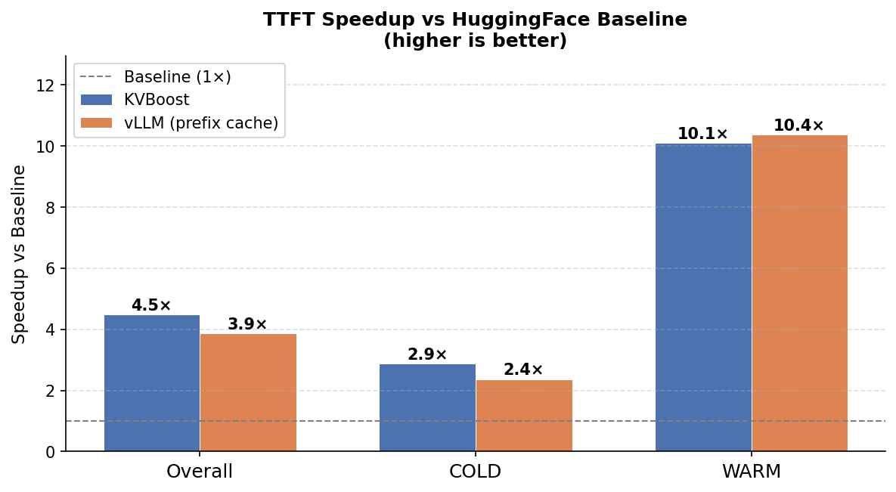
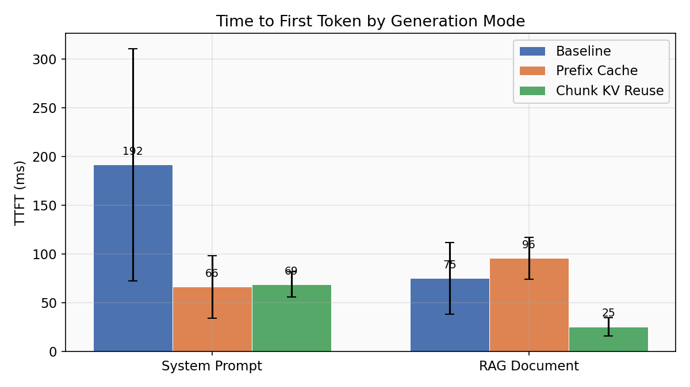
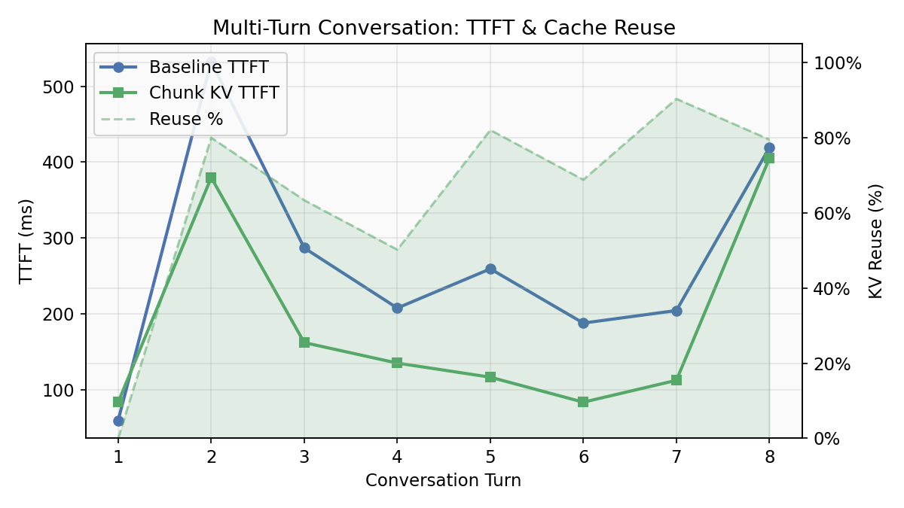
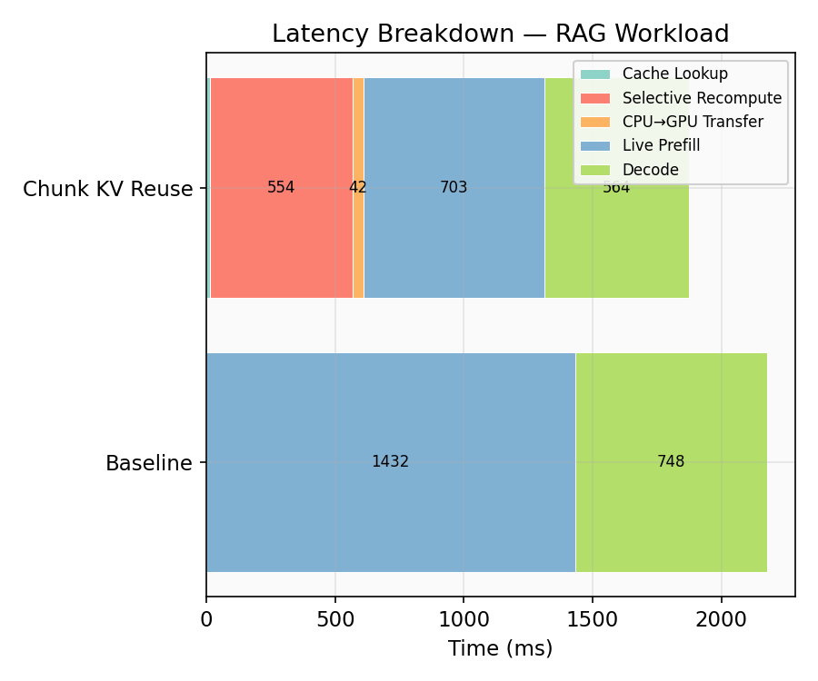
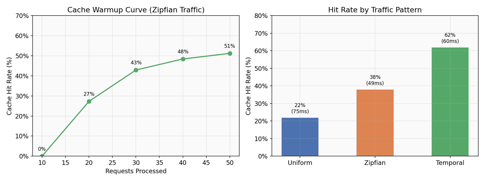
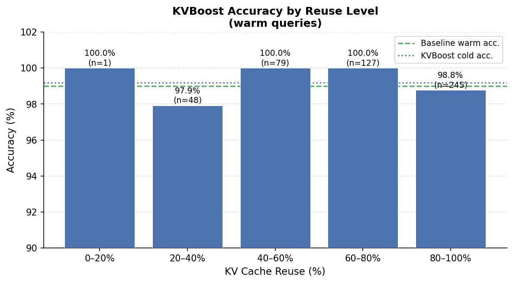

👈 Pick a module on the left, or to land on a random one.
What's in the box
Six feature areas. Each card jumps you into the relevant code.
🌊 AWQ Layer Streaming
Run models bigger than your VRAM.
Pinned-host AWQ weights, two CUDA staging slots, layer-by-layer DMA on a dedicated transfer stream. Per-forward chunked dequant keeps peak GPU memory bounded regardless of layer size.
- Qwen2.5-32B-AWQ end-to-end on an 8 GB GPU
- ~5.65 GB peak VRAM after load, ~6.13 GB during decode
- Honest tradeoff: PCIe-bound, ~0.1–3 tok/s — built for VRAM savings, not throughput
$ python -m kvboost.streaming.demo_partial_8b \
--model Qwen/Qwen2.5-32B-Instruct-AWQ \
--keep-first-k 4 --keep-last-k 4 \
--max-new-tokens 32
INFO: Replaced projections:
56 resident across 8 layers,
392 streamed across 56 layers
load_time: 10.7s
peak_vram_after_load: 5.65 GB
prefill_time: 67.71s
--- generation ---
Ent
[ 1/32] Δ_last= 12059ms running= 0.08 tok/s
ropy is a measure of the disorder
[ 8/32] Δ_last= 10551ms running= 0.11 tok/s
or randomness in a system. It can
[ 16/32] Δ_last= 9729ms running= 0.11 tok/s
also be thought of as the amount of
[ 24/32] Δ_last= 7595ms running= 0.11 tok/s
energy in a system that is unavailable for
[ 32/32] Δ_last= 7758ms running= 0.11 tok/s
--- summary ---
new_tokens: 32
avg_tok_per_s: 0.11
peak_vram_during_decode: 6.13 GBBrowse the codebase
43 Python modules, ~10K lines. Filter by feature, search by name, click a file to see what it does and what's inside.
Benchmarks & figures
Generated from the test suite via
docs/figures/generate_figures.py. Hover for the full-size version.






Quickstart
Two minutes to a working chunk-reuse generation.
from kvboost import KVBoost
engine = KVBoost.from_pretrained("Qwen/Qwen2.5-3B")
# Warm a shared prefix once
engine.warm("You are a helpful coding assistant. Always be concise...")
# Subsequent generates reuse cached chunks automatically
result = engine.generate(
"You are a helpful coding assistant. Always be concise...\n\n"
"User: How do I reverse a linked list?\nAssistant:",
max_new_tokens=128,
)
print(result.output_text)
print(f"TTFT: {result.ttft_ms:.1f} ms | cache reuse: {result.kv_reuse_ratio:.0%}")from kvboost import KVBoost
from kvboost.streaming import StreamingConfig
# Adds the streaming runtime — same engine API.
engine = KVBoost.from_pretrained(
"Qwen/Qwen2.5-32B-Instruct-AWQ",
streaming_config=StreamingConfig(keep_first_k=4, keep_last_k=4),
max_cache_bytes=1 * 1024**3,
)
print(engine.generate("Explain entropy.", max_new_tokens=64).output_text)